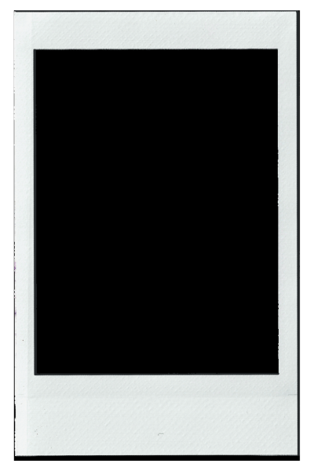
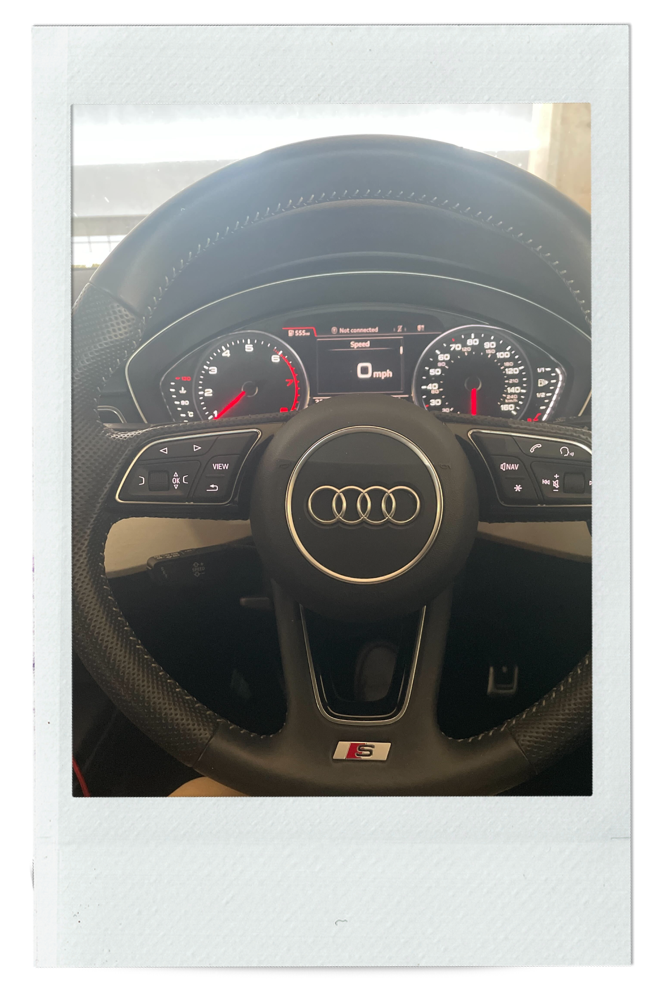

IDEA No. 346

Piggy bank

IRE map

Spider plant

The autumn leaf

Cake tin

A car

. . .
Whether it's from a library, our parents or best friends, we get to borrow some items from time to time with the original idea of giving it back... But sometimes life comes in the way! Check it out what we have borrowed from others that might never get returned to its original owners. Click on cards to reveal the stories behind objects!
IDEA No. 346
Piggy bank
IRE map
Spider plant
The autumn leaf
Cake tin
A car
. . .
This is an issue of a Japanese graphic design and typography magazine. I borrowed it from my design tutor back in uni when I was exploring book design.
He felt this magazine aligned with my style. This particular issue focused on the work of Harata HeiQuiti, a Japanese graphic designer, which was truly inspiring. I loved his fragmented layouts, vivid colours, and all that structured chaos. The magazine itself felt like a piece of art, stitched together from different types of paper varying in size, texture, and printing methods.
I took the magazine home from the studio, supposedly just for a few weeks — and then Covid started! I packed the rest of my belongings from the studio and stored everything safely at mine for much longer than anyone could have expected. And maybe... I forgot about that magazine, even after the whole pandemic business was over. I found it some time later while tidying my piles of books. I felt bad about not returning it to my tutor, but honestly, it is such a beautiful publication that I allowed myself to be a "book thief" just this once (sorry, Colin!). — Dominyka
This piggy bank belongs to my mom. It has accompanied me my entire life, as it sits on the window ledge of my room. Over the years my mom and I saved many coins in here, and later used them to enjoy ice creams and more together! Every time I see this little 'something borrowed' I remember the lovely moments it gave us and am excited what the coins in this piggy bank will allow us to experience in the future. — Victoria
We “borrowed” this map from a lovely Air BnB in Cong, Republic of Ireland (the owner allowed us to have it!). We then went on a road trip exploring different parts of the country, including Galway, Limerick, Tipperary and Doolin. We ended the trip in Westport, where my family are from, and even climbed the famous Croagh Patrick mountain!
— Lucy
My pride and joy or my rental flat is this spider plant that is left behind when the previous person moved out. Between all the other plants only this one managed to survive the harsh winter and the gap period between the 2 rentals so it's a real fierce fighter! It also constantly produces smaller 'spiderette' plants so it's a proud mama of 2 other tiny pots of plants that we — up until now — managed to keep healthy. I consider her as a part of family now. — Niki
The autumn leaf art — took it from my sister and I haven't given it back till today, it captures the essence of autumn's beauty with its depiction of falling leaves. Each leaf seems to tell a story of the changing seasons, evoking feelings of nostalgia and tranquillity. — Christabel
Mum's cake tin — Lydia
I live for a trip, so I borrowed (rented) this car to go on a long trip with my loved ones. It represents feeling carefree and stress free. — Lucy
If you would like to share "something borrowed" of yours, please go here to submit your picture!
Don't forget to add your name and a brief description of the object. Once we review, it will be uploaded to this gallery!